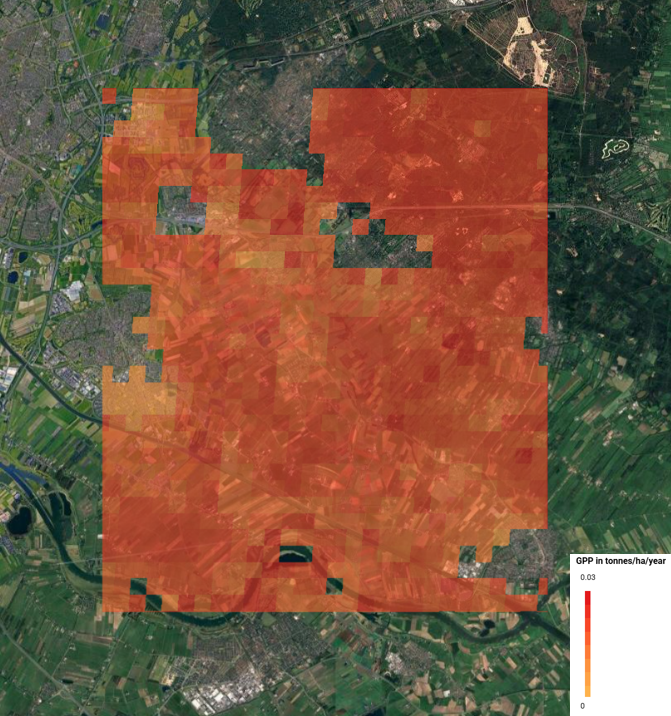
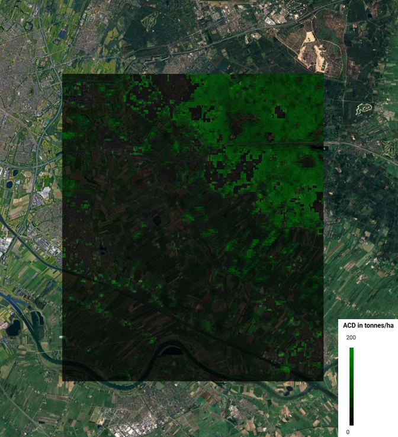

Carbon Sequestration
General info:
The purpose of this project was to assess the carbon sequestration potential of a green space near my home city. This was done using Earth Observation data, which provided me with the information needed to calculate Gross Primary Production (GPP) of the area (an indicator of the amount of energy plants produce in an ecosystem) as well as Aboveground carbon density (ACD – an indicator of the amount of forest in an area)
Gross Primary Prodcution
Aboveground Carbon Density Map
Check out my app here
It is clear from the images that the area with the most concentrated GPP overlaps with that of ACD – that is the top right corner of the delineated rectangle – , which makes sense given that trees are good at absorbing and sequestering CO2. Thus that the region is characterized by the highest carbon sequestration potential and would be the most suitable for a governmental action to protect it, if the Netherlands were to strive for cleaner air and less emissions.
Skills acquired:
I learned how to how to look for biomass datasets and match them with a specific region in the World. I also improved my understanding of coding in the Google Earth Engine and how to update certain codes to fit with my own imported data. Finally, I understood how carbon storage potential can be estimated by finding the density of tree cover in the region, as well as the biomass’ ability to turn sunlight and water into usable energy.